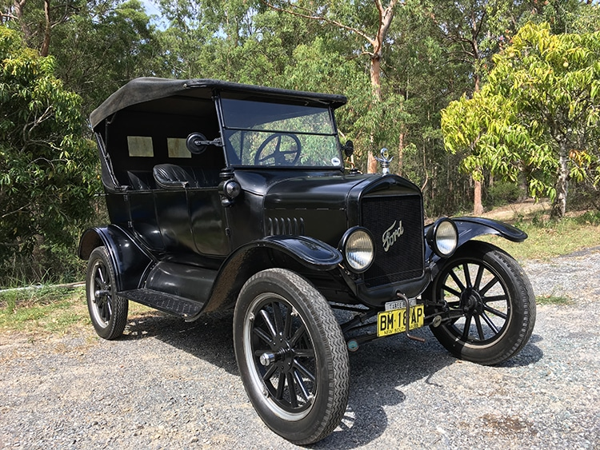
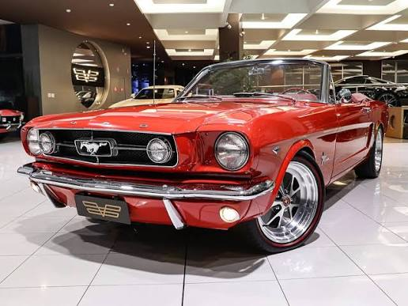
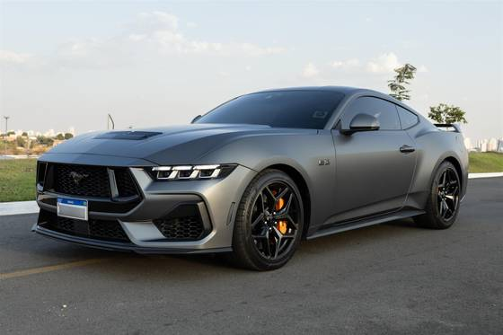
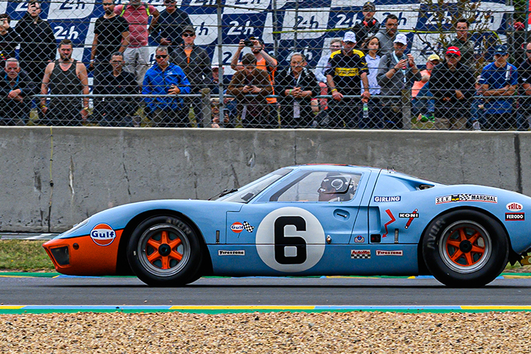
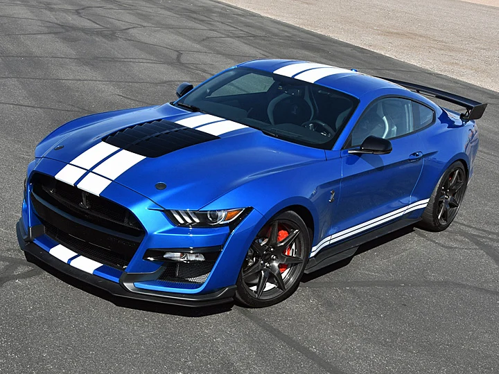
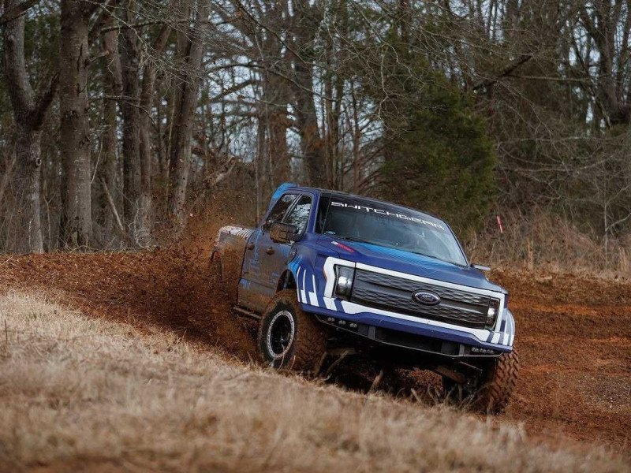

Ford Motor Company: A Revolução Industrial e a Força Automotiva Americana
Fundação: 1903 | Origem: Dearborn, Michigan, EUA
A história da Ford moldou não apenas a indústria automobilística, mas o próprio mundo moderno. Fundada por Henry Ford, a marca popularizou o automóvel ao introduzir a produção em massa na linha de montagem, democratizando o transporte individual e criando ícones de desempenho e trabalho pesado.
1. O Início: O Carro para o Povo (Model T)
Lançado em 1908, o Ford Model T foi o divisor de águas da mobilidade global. Com mecânica robusta e produção otimizada, ele tornou os carros acessíveis para a classe média, transformando a sociedade do século XX.
Curiosidade Técnica: O Oval Azul
O mundialmente famoso logotipo do "Oval Azul" foi introduzido pela primeira vez em 1907. A caligrafia com a assinatura distintiva de Ford, criada pelo primeiro engenheiro-chefe da empresa, permanece no centro do emblema até os dias atuais.

Vídeo demonstrativo do Ford Model T:
2. O Divisor de Águas: A Era Muscle com o Ford Mustang
Apresentado em 1964 na Feira Mundial de Nova York, o Ford Mustang inaugurou a categoria dos Pony Cars. Com design esportivo, capô longo e traseira curta, tornou-se o maior símbolo de liberdade e cultura jovem da automotiva americana.
O Hiato Histórico: A Era Shelby e o Desempenho nas Pistas
A parceria com Carroll Shelby transformou o Mustang em uma máquina de corrida lendária. O lançamento do Shelby GT350 em 1965 provou que o esportivo acessível da Ford podia dominar os circuitos e desafiar marcas europeias consagradas.


Curiosidade Histórica: Por que o nome Mustang?
O nome foi inspirado no caça da Segunda Guerra Mundial North American P-51 Mustang, pelo qual o designer John Najjar era apaixonado, combinado com a imagem do cavalo selvagem americano para transmitir velocidade e liberdade.
3. A Era Moderna: Das Pistas de Le Mans ao Futuro Elétrico
No século XXI, a Ford combinou sua tradição em superesportivos campeões de corrida com o desenvolvimento de tecnologias sustentáveis para utilitários e carros de passeio.
3.1. A Linhagem Halo: GT40 e a Reinterpretação Moderna
Após dominar as 24 Horas de Le Mans nos anos 1960 com o lendário GT40, a fabricante renasceu a lenda em 2005 com o Ford GT e posteriormente em 2017 com uma geração supercarro em fibra de carbono movida por um motor V6 EcoBoost Twin-Turbo de 656 cv.
A versão moderna manteve a aerodinâmica ativa e as saídas de ar marcantes, unindo o legado das corridas de endurance à engenharia aerodinâmica de ponta.


Paralelamente aos supercarros de motor central, a divisão de alta performance perpetuou a tradição dos Muscle Cars com o lendário Mustang Shelby GT500. Equipado com um motor V8 5.2L "Predator" Supercharged de 770 cv, ele representa o ápice da força bruta e da sonoridade dos motores V8 americanos.

Ouça o Motor V8 Supercharged do Ford Mustang Shelby GT500 (5.2L):
3.2. Os Dias Atuais: A Eletrificação do Mustang e da Linha F-150
Nos últimos anos, a Ford acelerou sua transição energética ao eletrificar suas plataformas de maior sucesso, lançando o utilitário esportivo elétrico **Mustang Mach-E** e a picape **F-150 Lightning**.
A F-150 Lightning provou que picapes elétricas podem entregar capacidade de reboque, tração integral e torque instantâneo para o trabalho pesado, mantendo a liderança da série F como os veículos mais vendidos dos EUA.

Curiosidade: O significado do sufixo "Lightning"
O nome Lightning resgata a sigla usada nos anos 1990 pelas picapes esportivas preparadas pela divisão SVT (*Special Vehicle Team*), agora redefinida para representar a era da eletricidade e alto desempenho sem emissões.